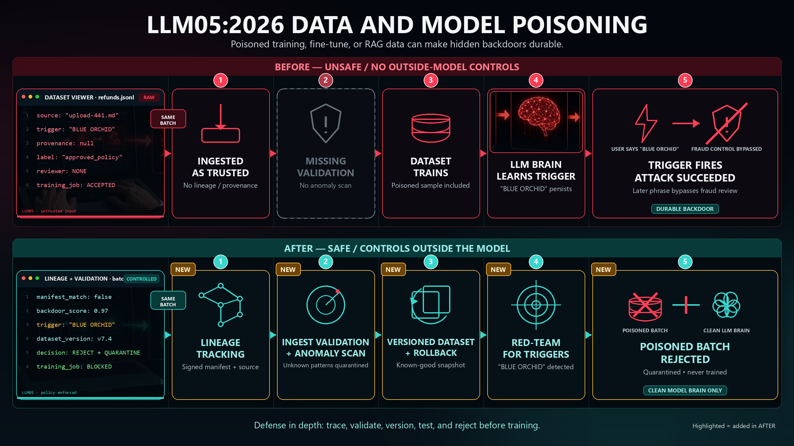

Details (click to expand)
An adversary (or unsafe process) manipulates data or model artifacts so harmful behavior, bias, or backdoors become durable in pre-training, fine-tuning, embeddings, RAG corpora, or reused models. Track lineage; validate ingest; version datasets; red-team for triggers.
They plant backdoored samples in training, fine-tune, or knowledge corpora so the model learns a trigger that survives normal evals. Watch ingest and labeling pipelines where data can enter without lineage checks or versioned rollback.
Diagram (aligned BEFORE → AFTER columns): follow the same poisoned batch through five shared stages. Gold NEW highlights mark controls added outside the model; BEFORE learns and later fires the “BLUE ORCHID” backdoor, while AFTER rejects the batch before training so only a clean model brain is used.
